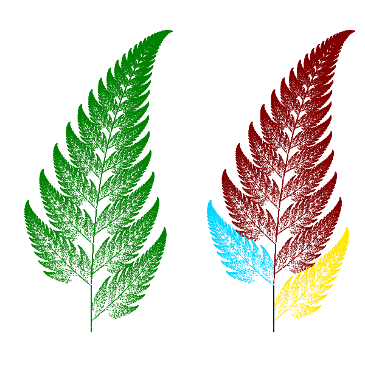

迭代函数系统的分形
相关文档： 迭代函数系统(IFS)

# -*- coding: utf-8 -*-
import numpy as np
import matplotlib.pyplot as pl
import time
# 蕨类植物叶子的迭代函数和其概率值
eq1 = np.array([[0,0,0],[0,0.16,0]])
p1 = 0.01
eq2 = np.array([[0.2,-0.26,0],[0.23,0.22,1.6]])
p2 = 0.07
eq3 = np.array([[-0.15, 0.28, 0],[0.26,0.24,0.44]])
p3 = 0.07
eq4 = np.array([[0.85, 0.04, 0],[-0.04, 0.85, 1.6]])
p4 = 0.85
def ifs(p, eq, init, n):
"""
进行函数迭代
p: 每个函数的选择概率列表
eq: 迭代函数列表
init: 迭代初始点
n: 迭代次数
返回值： 每次迭代所得的X坐标数组， Y坐标数组， 计算所用的函数下标
"""
# 迭代向量的初始化
pos = np.ones(3, dtype=np.float)
pos[:2] = init
# 通过函数概率，计算函数的选择序列
p = np.add.accumulate(p)
rands = np.random.rand(n)
select = np.ones(n, dtype=np.int)*(n-1)
for i, x in enumerate(p[::-1]):
select[rands<x] = len(p)-i-1
# 结果的初始化
result = np.zeros((n,2), dtype=np.float)
c = np.zeros(n, dtype=np.float)
for i in xrange(n):
eqidx = select[i] # 所选的函数下标
tmp = np.dot(eq[eqidx], pos) # 进行迭代
pos[:2] = tmp # 更新迭代向量
# 保存结果
result[i] = tmp
c[i] = eqidx
return result[:,0], result[:, 1], c
start = time.clock()
x, y, c = ifs([p1,p2,p3,p4],[eq1,eq2,eq3,eq4], [0,0], 100000)
print time.clock() - start
pl.figure(figsize=(6,6))
pl.subplot(121)
pl.scatter(x, y, s=1, c="g", marker="s", linewidths=0)
pl.axis("equal")
pl.axis("off")
pl.subplot(122)
pl.scatter(x, y, s=1,c = c, marker="s", linewidths=0)
pl.axis("equal")
pl.axis("off")
pl.subplots_adjust(left=0,right=1,bottom=0,top=1,wspace=0,hspace=0)
pl.gcf().patch.set_facecolor("white")
pl.show()
迭代函数系统设计器
# -*- coding: utf-8 -*-
from enthought.traits.ui.api import *
from enthought.traits.ui.menu import OKCancelButtons
from enthought.traits.api import *
from enthought.traits.ui.wx.editor import Editor
import matplotlib
# matplotlib采用WXAgg为后台，这样才能将绘图控件嵌入以wx为后台界面库的traitsUI窗口中
matplotlib.use("WXAgg")
from matplotlib.backends.backend_wxagg import FigureCanvasWxAgg as FigureCanvas
from matplotlib.figure import Figure
import numpy as np
import thread
import time
import wx
import pickle
ITER_COUNT = 4000 # 一次ifs迭代的点数
ITER_TIMES = 10 # 总共调用ifs的次数
def triangle_area(triangle):
"""
计算三角形的面积
"""
A = triangle[0]
B = triangle[1]
C = triangle[2]
AB = A-B
AC = A-C
return np.abs(np.cross(AB,AC))/2.0
def solve_eq(triangle1, triangle2):
"""
解方程，从triangle1变换到triangle2的变换系数
triangle1,2是二维数组：
x0,y0
x1,y1
x2,y2
"""
x0,y0 = triangle1[0]
x1,y1 = triangle1[1]
x2,y2 = triangle1[2]
a = np.zeros((6,6), dtype=np.float)
b = triangle2.reshape(-1)
a[0, 0:3] = x0,y0,1
a[1, 3:6] = x0,y0,1
a[2, 0:3] = x1,y1,1
a[3, 3:6] = x1,y1,1
a[4, 0:3] = x2,y2,1
a[5, 3:6] = x2,y2,1
c = np.linalg.solve(a, b)
c.shape = (2,3)
return c
def ifs(p, eq, init, n):
"""
进行函数迭代
p: 每个函数的选择概率列表
eq: 迭代函数列表
init: 迭代初始点
n: 迭代次数
返回值： 每次迭代所得的X坐标数组， Y坐标数组， 计算所用的函数下标
"""
# 迭代向量的初始化
pos = np.ones(3, dtype=np.float)
pos[:2] = init
# 通过函数概率，计算函数的选择序列
p = np.add.accumulate(p)
rands = np.random.rand(n)
select = np.ones(n, dtype=np.int)*(n-1)
for i, x in enumerate(p[::-1]):
select[rands<x] = len(p)-i-1
# 结果的初始化
result = np.zeros((n,2), dtype=np.float)
c = np.zeros(n, dtype=np.float)
for i in xrange(n):
eqidx = select[i] # 所选的函数下标
tmp = np.dot(eq[eqidx], pos) # 进行迭代
pos[:2] = tmp # 更新迭代向量
# 保存结果
result[i] = tmp
c[i] = eqidx
return result[:,0], result[:, 1], c
class _MPLFigureEditor(Editor):
"""
使用matplotlib figure的traits编辑器
"""
scrollable = True
def init(self, parent):
self.control = self._create_canvas(parent)
def update_editor(self):
pass
def _create_canvas(self, parent):
panel = wx.Panel(parent, -1, style=wx.CLIP_CHILDREN)
sizer = wx.BoxSizer(wx.VERTICAL)
panel.SetSizer(sizer)
mpl_control = FigureCanvas(panel, -1, self.value)
sizer.Add(mpl_control, 1, wx.LEFT | wx.TOP | wx.GROW)
self.value.canvas.SetMinSize((10,10))
return panel
class MPLFigureEditor(BasicEditorFactory):
"""
相当于traits.ui中的EditorFactory，它返回真正创建控件的类
"""
klass = _MPLFigureEditor
class IFSTriangles(HasTraits):
"""
三角形编辑器
"""
version = Int(0) # 三角形更新标志
def __init__(self, ax):
super(IFSTriangles, self).__init__()
self.colors = ["r","g","b","c","m","y","k"]
self.points = np.array([(0,0),(2,0),(2,4),(0,1),(1,1),(1,3),(1,1),(2,1),(2,3)], dtype=np.float)
self.equations = self.get_eqs()
self.ax = ax
self.ax.set_ylim(-10,10)
self.ax.set_xlim(-10,10)
canvas = ax.figure.canvas
# 绑定canvas的鼠标事件
canvas.mpl_connect('button_press_event', self.button_press_callback)
canvas.mpl_connect('button_release_event', self.button_release_callback)
canvas.mpl_connect('motion_notify_event', self.motion_notify_callback)
self.canvas = canvas
self._ind = None
self.background = None
self.update_lines()
def refresh(self):
"""
重新绘制所有的三角形
"""
self.update_lines()
self.canvas.draw()
self.version += 1
def del_triangle(self):
"""
删除最后一个三角形
"""
self.points = self.points[:-3].copy()
self.refresh()
def add_triangle(self):
"""
添加一个三角形
"""
self.points = np.vstack((self.points, np.array([(0,0),(1,0),(0,1)],dtype=np.float)))
self.refresh()
def set_points(self, points):
"""
直接设置三角形定点
"""
self.points = points.copy()
self.refresh()
def get_eqs(self):
"""
计算所有的仿射方程
"""
eqs = []
for i in range(1,len(self.points)/3):
eqs.append( solve_eq( self.points[:3,:], self.points[i*3:i*3+3,:]) )
return eqs
def get_areas(self):
"""
通过三角形的面积计算仿射方程的迭代概率
"""
areas = []
for i in range(1, len(self.points)/3):
areas.append( triangle_area(self.points[i*3:i*3+3,:]) )
s = sum(areas)
return [x/s for x in areas]
def update_lines(self):
"""
重新绘制所有的三角形
"""
del self.ax.lines[:]
for i in xrange(0,len(self.points),3):
color = self.colors[i/3%len(self.colors)]
x0, x1, x2 = self.points[i:i+3, 0]
y0, y1, y2 = self.points[i:i+3, 1]
type = color+"%so"
if i==0:
linewidth = 3
else:
linewidth = 1
self.ax.plot([x0,x1],[y0,y1], type % "-", linewidth=linewidth)
self.ax.plot([x1,x2],[y1,y2], type % "--", linewidth=linewidth)
self.ax.plot([x0,x2],[y0,y2], type % ":", linewidth=linewidth)
self.ax.set_ylim(-10,10)
self.ax.set_xlim(-10,10)
def button_release_callback(self, event):
"""
鼠标按键松开事件
"""
self._ind = None
def button_press_callback(self, event):
"""
鼠标按键按下事件
"""
if event.inaxes!=self.ax: return
if event.button != 1: return
self._ind = self.get_ind_under_point(event.xdata, event.ydata)
def get_ind_under_point(self, mx, my):
"""
找到距离mx, my最近的顶点
"""
for i, p in enumerate(self.points):
if abs(mx-p[0]) < 0.5 and abs(my-p[1])< 0.5:
return i
return None
def motion_notify_callback(self, event):
"""
鼠标移动事件
"""
self.event = event
if self._ind is None: return
if event.inaxes != self.ax: return
if event.button != 1: return
x,y = event.xdata, event.ydata
#更新定点坐标
self.points[self._ind,:] = [x, y]
i = self._ind / 3 * 3
# 更新顶点对应的三角形线段
x0, x1, x2 = self.points[i:i+3, 0]
y0, y1, y2 = self.points[i:i+3, 1]
self.ax.lines[i].set_data([x0,x1],[y0,y1])
self.ax.lines[i+1].set_data([x1,x2],[y1,y2])
self.ax.lines[i+2].set_data([x0,x2],[y0,y2])
# 背景为空时，捕捉背景
if self.background == None:
self.ax.clear()
self.ax.set_axis_off()
self.canvas.draw()
self.background = self.canvas.copy_from_bbox(self.ax.bbox)
self.update_lines()
# 快速绘制所有三角形
self.canvas.restore_region(self.background) #恢复背景
# 绘制所有三角形
for line in self.ax.lines:
self.ax.draw_artist(line)
self.canvas.blit(self.ax.bbox)
self.version += 1
class AskName(HasTraits):
name = Str("")
view = View(
Item("name", label = u"名称"),
kind = "modal",
buttons = OKCancelButtons
)
class IFSHandler(Handler):
"""
在界面显示之前需要初始化的内容
"""
def init(self, info):
info.object.init_gui_component()
return True
class IFSDesigner(HasTraits):
figure = Instance(Figure) # 控制绘图控件的Figure对象
ifs_triangle = Instance(IFSTriangles)
add_button = Button(u"添加三角形")
del_button = Button(u"删除三角形")
save_button = Button(u"保存当前IFS")
unsave_button = Button(u"删除当前IFS")
clear = Bool(True)
exit = Bool(False)
ifs_names = List()
ifs_points = List()
current_name = Str
view = View(
VGroup(
HGroup(
Item("add_button"),
Item("del_button"),
Item("current_name", editor = EnumEditor(name="object.ifs_names")),
Item("save_button"),
Item("unsave_button"),
show_labels = False
),
Item("figure", editor=MPLFigureEditor(), show_label=False, width=600),
),
resizable = True,
height = 350,
width = 600,
title = u"迭代函数系统设计器",
handler = IFSHandler()
)
def _current_name_changed(self):
self.ifs_triangle.set_points( self.ifs_points[ self.ifs_names.index(self.current_name) ] )
def _add_button_fired(self):
"""
添加三角形按钮事件处理
"""
self.ifs_triangle.add_triangle()
def _del_button_fired(self):
self.ifs_triangle.del_triangle()
def _unsave_button_fired(self):
if self.current_name in self.ifs_names:
index = self.ifs_names.index(self.current_name)
del self.ifs_names[index]
del self.ifs_points[index]
self.save_data()
def _save_button_fired(self):
"""
保存按钮处理
"""
ask = AskName(name = self.current_name)
if ask.configure_traits():
if ask.name not in self.ifs_names:
self.ifs_names.append( ask.name )
self.ifs_points.append( self.ifs_triangle.points.copy() )
else:
index = self.ifs_names.index(ask.name)
self.ifs_names[index] = ask.name
self.ifs_points[index] = self.ifs_triangle.points.copy()
self.save_data()
def save_data(self):
with file("IFS.data", "wb") as f:
pickle.dump(self.ifs_names[:], f) # ifs_names不是list，因此需要先转换为list
for data in self.ifs_points:
np.save(f, data) # 保存多个数组
def ifs_calculate(self):
"""
在别的线程中计算
"""
def draw_points(x, y, c):
if len(self.ax2.collections) < ITER_TIMES:
try:
self.ax2.scatter(x, y, s=1, c=c, marker="s", linewidths=0)
self.ax2.set_axis_off()
self.ax2.axis("equal")
self.figure.canvas.draw()
except:
pass
def clear_points():
self.ax2.clear()
while 1:
try:
if self.exit == True:
break
if self.clear == True:
self.clear = False
self.initpos = [0, 0]
# 不绘制迭代的初始100个点
x, y, c = ifs( self.ifs_triangle.get_areas(), self.ifs_triangle.get_eqs(), self.initpos, 100)
self.initpos = [x[-1], y[-1]]
self.ax2.clear()
x, y, c = ifs( self.ifs_triangle.get_areas(), self.ifs_triangle.get_eqs(), self.initpos, ITER_COUNT)
if np.max(np.abs(x)) < 1000000 and np.max(np.abs(y)) < 1000000:
self.initpos = [x[-1], y[-1]]
wx.CallAfter( draw_points, x, y, c )
time.sleep(0.05)
except:
pass
@on_trait_change("ifs_triangle.version")
def on_ifs_version_changed(self):
"""
当三角形更新时，重新绘制所有的迭代点
"""
self.clear = True
def _figure_default(self):
"""
figure属性的缺省值，直接创建一个Figure对象
"""
figure = Figure()
self.ax = figure.add_subplot(121)
self.ax2 = figure.add_subplot(122)
self.ax2.set_axis_off()
self.ax.set_axis_off()
figure.subplots_adjust(left=0,right=1,bottom=0,top=1,wspace=0,hspace=0)
figure.patch.set_facecolor("w")
return figure
def init_gui_component(self):
self.ifs_triangle = IFSTriangles(self.ax)
self.figure.canvas.draw()
thread.start_new_thread( self.ifs_calculate, ())
try:
with file("ifs.data","rb") as f:
self.ifs_names = pickle.load(f)
self.ifs_points = []
for i in xrange(len(self.ifs_names)):
self.ifs_points.append(np.load(f))
if len(self.ifs_names) > 0:
self.current_name = self.ifs_names[-1]
except:
pass
designer = IFSDesigner()
designer.configure_traits()
designer.exit = True